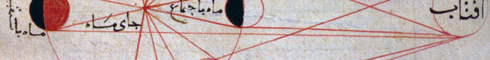
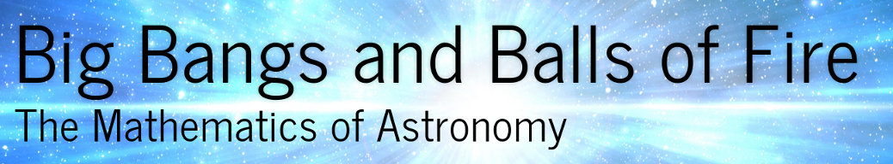

Mathematics in Astronomy
April 8, 2015

I gave a talk for the STEP Easter School, a summer programme for students from non-selective state schools who have been given offers to read mathematics at Cambridge. Although I never had the experience of applying to Cambridge as an undergrad, I can imagine that it would have been slightly terrifying! It was nice to get to talk to students who were in a similar position as I was, where their schools don’t necessarily have a lot of funding to throw at helping them through examinations.
Anyway, I decided that the best thing to do would be to give a talk on the mathematics of astronomy, starting from some A-level principles and quickly moving on to explain how these were relevant to modern astrophysics. I covered three main themes:
- how some simple geometrical principles like arc lengths relate to the geometry of space time, and from there to idea of causality and the horizon problem in cosmology;
- how astrophysicists use differential equations to model things like the interiors of stars and planets; and
- how N-body simulations allow us to take a simple set of behaviours (like the movement of particles under gravity) and, with the help of supercomputers, study the behaviour of large, chaotic systems.
One of the nicest things that happened after the talk was that a teacher came up to me and told me I was a natural and that the talk was excellent :)
Also, I gave it a silly title.

Since it contains a couple of large videos, including an animation of the Illustris simulation, I haven’t put it online, but please contact me if you would like more information. I wrote the talk using the slideshow feature of Ipython notebook/Jupyter, which uses Reveal.js.